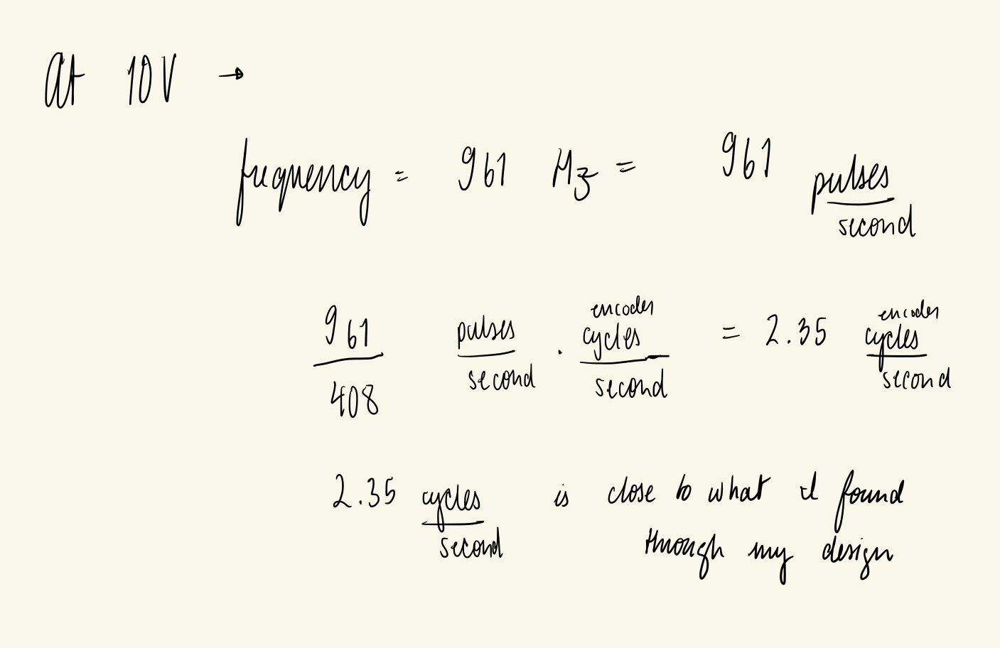
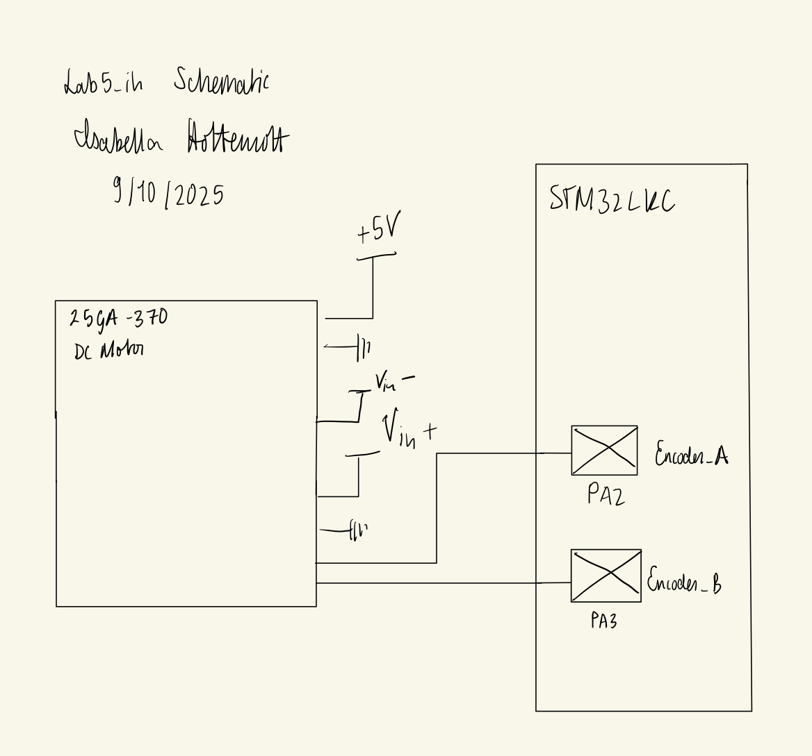

Lab 5: Interrupts
Introduction
In this lab, interrupts were configured on the STM32L432KC Board to register all inputs of a quadrature encoder over a GPIO pin, and accurately report the angular velocity of a motor. A motor and attached quadrature encoder were powered and attached to the GPIO pins of the MCU. The interrupts were configured through writing to various registers, as well as an interrupt service routine coded in C. The inputs from the interrupts are passed through a decoding scheme that accounts for direction and potential debouncing or jitter, as detailed by the reference manual, to output a count of pulses from the Hall Effect encoder sensors. The decoded signals were sampled and entirely refreshed every 100ms, providing an accurate report of the motor’s velocity at a frequency of 10 Hz.
Design and Testing Methodology
Research on the protocol of a quadrature encoder was undertaken in order to best understand the steps required to proceed. To produce the most precise report of velocity, encoder pulses were detected on both the rising and falling edges of both encoder A and B. This, as well as other register configurations like enabling the system clock, configuraing themas bits, and turning on the EXTI interrupt, were executed. The Nested Vector Interrupt Controller, as a result, is able to redirect any interrupts to their respective routines by saving the PC and loading the corresponding ISR into the PC. The ISRs are short and only turn on a flag, which is recognized in main.c and propagates the further calculations from there. Both GPIO pins are read, and their readings are encoded and processed to produce a pulse count. The processing draws inspiration from the TIM2 Encoder Interface Mode. From there, the velocity is calculated following the equation:
\[ Velocity = \frac{pulses * time}{1000*no.edges*PPR} \]
As time is reported in milliseconds, the time/1000 component is multiplied into the velocity calculation. This implementation detects both rising and falling edges of the two encoders, so a total of four edges. The PPR of the encoder used in this design is 408 pulses per revolution. The velocity is reported every 100ms- so at a 10 Hz frequency- which is controlled by a timer, UPDATE_TIM. The code is written in a modular way such that switching to a report frequency of 1 Hz is simple and easy.
Technical Documentation
The basis for encoding of detected pulses was taken from the STM32L4xxxx Reference manual. The diagram is shown below.
Each current and previous value was recorded, and the resulting contribution to the total number of pulses derived. To do so, the following two tables were written out.
Previous and Current Encoder Values
These detailed processing was executed through a case statement in C.
Calculations to verify this implementation are shown below. The frequency of pulses was found through an oscilloscope, and the velocity was backward counted from there by hand. The result was compared to what was found in Segger.

Interrupt Diagram
The below diagram illustrates the main steps of the program and different function calls that execute with the enabled interrupts.
Schematic
The below schematic illustrates the simple setup for this design.

Results and Discussion
This project successfully demonstrated the ability and efficacy of an interrupt protocol to act immediately.
In order to further investigate the reduction in latency by implementing an interrupt scheme, similar code was run using a polling method, where the GPIO pins were simply scanned. The differences were observed over an oscilloscope. Traces of the input pulse signals from the encoder are visible in both. An “acknowledged” signal is also put on the scope, for both implementations.
Polling Oscilloscope Traces
Interrupt Oscilloscope Traces
As can be seen, the polling method- which required 200 ms of delay- missed a large amount of the pulses in processing the realized pulse. As a result, the velocity was grossly miscalculated. On the other hand, the interrupt method is demonstrated to capture both the rising and falling edge of the single encoder pulse. Therefore- especially at high speeds- the performance of a manual polling method is much poorer than that of an interrupt implementation.
Conclusion
This design was a successful implementation of a quadrature encoder. The reported velocity is precise for a variety of reasons. For one, the system is very responsiveness due to the configured interrupts. The high resolution provided by four edge detection provides more precision, as well as the 10 Hz update rate, and the reporting of velocity to four decimal points. This lab took me 11 hours.
AI Prototype Summary
I prompted ChatGPT5 with the following: “Write me interrupt handlers to interface with a quadrature encoder. I’m using the STM32L432KC, what pins should I connect the encoder to in order to allow it to easily trigger the interrupts?”
In response, it provided me with the following:
"// Globals
static volatile int32_t encoder_count = 0;
static volatile uint8_t prev_state = 0;
// Call this during init (after HAL_Init and clocks).
static void Encoder_EXTI_Init(void) {
__HAL_RCC_GPIOA_CLK_ENABLE();
gi.Mode = GPIO_MODE_IT_RISING_FALLING; // fire on both edges
gi.Pull = GPIO_PULLUP; // or GPIO_NOPULL if you have externals
gi.Speed = GPIO_SPEED_FREQ_LOW;
// Using PA0 (A) and PA1 (B). Change to whatever pins you chose.
gi.Pin = GPIO_PIN_0 | GPIO_PIN_1;
HAL_GPIO_Init(GPIOA, &gi);
// Read initial state
uint8_t a = HAL_GPIO_ReadPin(GPIOA, GPIO_PIN_0) ? 1 : 0;
uint8_t b = HAL_GPIO_ReadPin(GPIOA, GPIO_PIN_1) ? 1 : 0;
prev_state = (a << 1) | b;
// Enable EXTI lines NVIC (EXTI0 for PA0, EXTI1 for PA1)
HAL_NVIC_SetPriority(EXTI0_IRQn, 5, 0);
HAL_NVIC_EnableIRQ(EXTI0_IRQn);
HAL_NVIC_SetPriority(EXTI1_IRQn, 5, 0);
HAL_NVIC_EnableIRQ(EXTI1_IRQn);
}
// Returns +1, -1, or 0 based on transition
static inline int8_t quad_step(uint8_t prev, uint8_t next) {
// Index (prev<<2)|next, values: 0, +1, -1, etc.
static const int8_t lut[16] = {
0, +1, -1, 0,
-1, 0, 0, +1,
+1, 0, 0, -1,
0, -1, +1, 0
};
return lut[(prev << 2) | next];
}
static inline void Encoder_EXTI_Service(void) {
uint8_t a = HAL_GPIO_ReadPin(GPIOA, GPIO_PIN_0) ? 1 : 0;
uint8_t b = HAL_GPIO_ReadPin(GPIOA, GPIO_PIN_1) ? 1 : 0;
uint8_t next = (a << 1) | b;
int8_t d = quad_step(prev_state, next);
prev_state = next;
encoder_count += d;
}
// IRQs (CubeMX names)
void EXTI0_IRQHandler(void) {
HAL_GPIO_EXTI_IRQHandler(GPIO_PIN_0);
}
void EXTI1_IRQHandler(void) {
HAL_GPIO_EXTI_IRQHandler(GPIO_PIN_1);
}
void HAL_GPIO_EXTI_Callback(uint16_t GPIO_Pin) {
if (GPIO_Pin == GPIO_PIN_0 || GPIO_Pin == GPIO_PIN_1) {
Encoder_EXTI_Service();
}
}"This code did not compile. I pasted some of the errors in, and the chatpot responded that it forgot to add in the line:
"GPIO_InitTypeDef gi = {0};"Only like this would the gi.xx have any reference to a struct. This addition still didnt compile, because it forgot to give me a header with:
"#include stm32l4xx_hal_gpio.h"I was a bit surprised by these mistakes, but I think the Chatbot just assumed I already had those header files somewhere.